Where does the album page’s ⋯ go on the phone when the album has editions?
Five options, drawn side by side at 360 dp, in English, Danish and Faroese. Round slug album-more-placement, 2026-10-23. The pictures are in png/ beside this file.
What is fixed
The new ⋯ (playlists spec FR-6):
The album page gains a ⋯ beside Play and Shuffle, on both the phone and the desktop header. For now it holds a single row, Add to playlist…, which opens FR-4’s picker for the album’s songs in the order Play plays them.
It will gain more rows later, so every option below draws it as the place secondary album actions live, not as a one-off.
R373’s split buttons (FR-R373-2 point 3, owner-approved):
Play album ▾ (primary) and Shuffle ▾ as split buttons. The ▾ menu: Play album ({n} songs · the official order) · Play album + extras ({n} songs · extras, then the B-sides), the current one ticked. The pick is remembered per album, per device, relabels the Play button (Play album + extras), and both buttons follow it.
Point 1 of the same FR also puts + {k} extra(s) in the header, after the official album’s count and length. Every editions frame here draws it; the playlists round’s two frames did not, so nothing in those pictures said the album had extras at all.
The width. 360 dp phone, 324 dp of content, every label whole in en, da and fo. The longest label is the relabelled primary: Play album + extras / Afspil album + ekstra / Spæl fløgu + eyka.
The finding that decides the question
R373’s row already does not fit the phone, before this round adds anything. With the ⋯ taken away entirely — which is options B and C — the split pair still truncates:
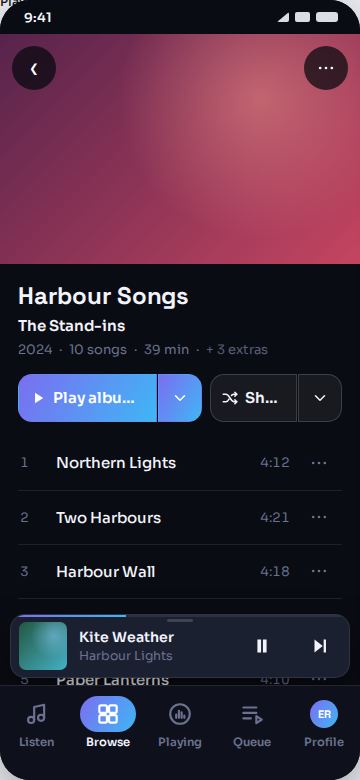
So the brief’s own test — every label stays whole — is not a test the ⋯’s placement can pass on its own. Three of the five options below fail it for a reason that has nothing to do with where the ⋯ went. Only two reach a whole relabelled primary: A, by taking R373’s relabel away altogether, and E, by giving the primary a row of its own.
The five options
A — one ⋯ instead of the two ▾ menus as delivered
The merge from the playlists round (ph-album-editions-merged). Both ▾s give up their split; the one ⋯ carries Play extras, Shuffle extras and Add to playlist…. Three controls, one place to look for “anything else”.
What a listener loses, in one line: the remembered pick — the Play button never says what it will play, so somebody who wants the extras asks for them again on every visit, on every album.
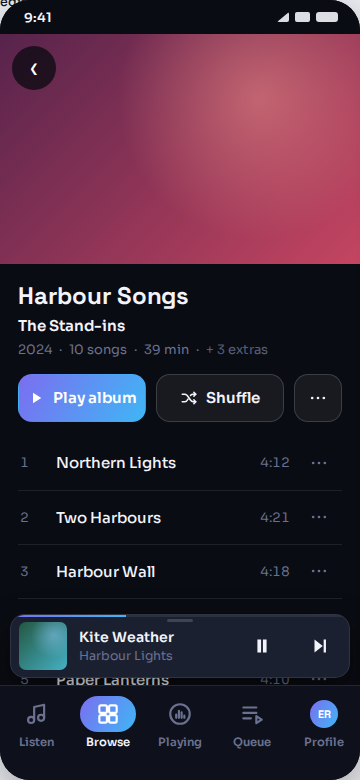
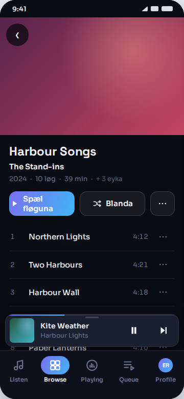
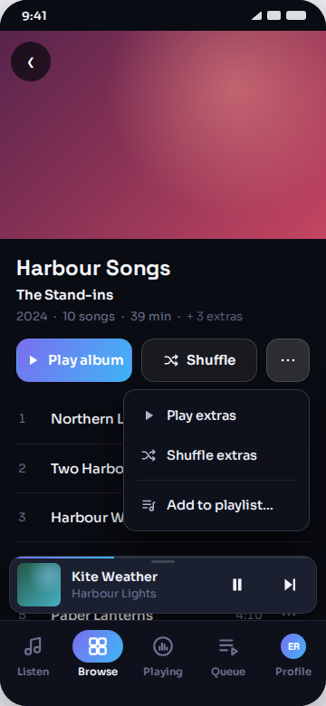
B — the ⋯ in the top bar
Top right, over the cover, opposite the back button, on every album. The split buttons are left exactly as R373 shipped them.
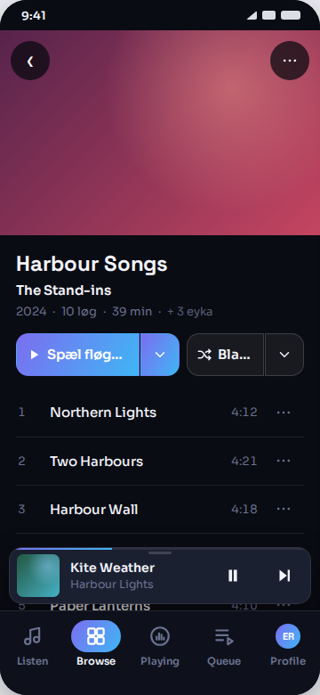
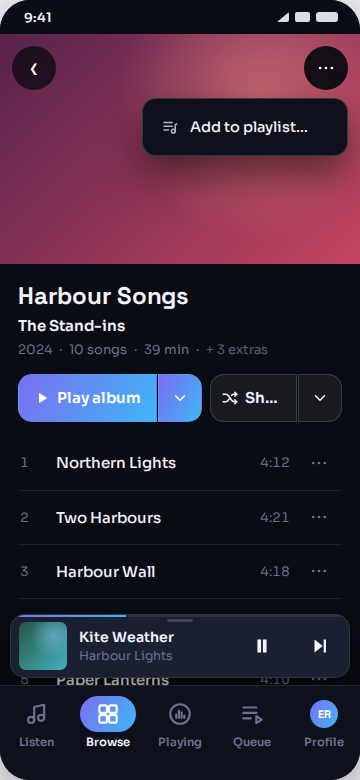
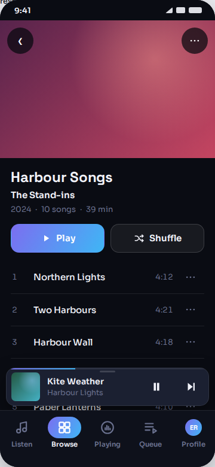
The cost beyond the labels: the ⋯ leaves the action row on every album, which puts Add to playlist… a long reach from the thumb and a long way from the buttons it belongs with. It also implies the same move on the desktop, where there is no crowding to justify it.
C — the ⋯ on the title block
At the end of the album-title / artist lines. The split buttons are untouched.
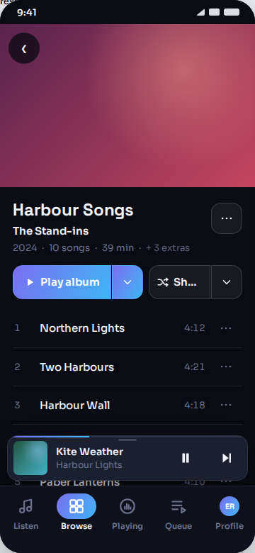
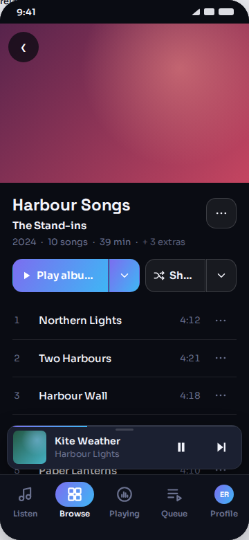
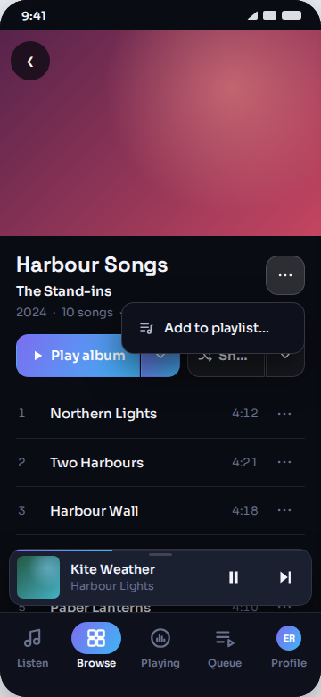
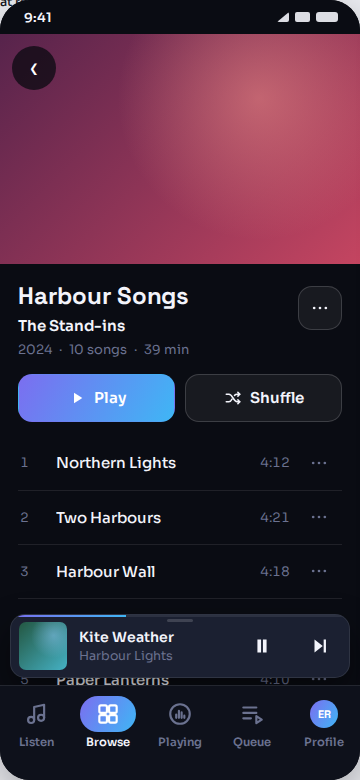
D — a compact Shuffle
An icon-only Shuffle ▾ beside a full Play album ▾ and the ⋯, all on one row.
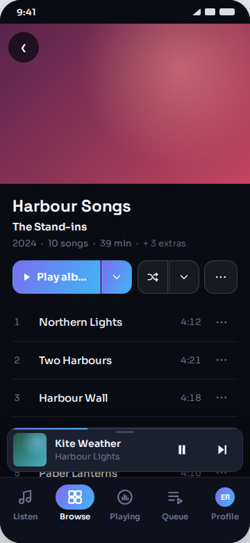
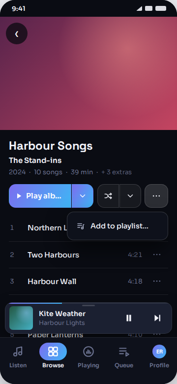
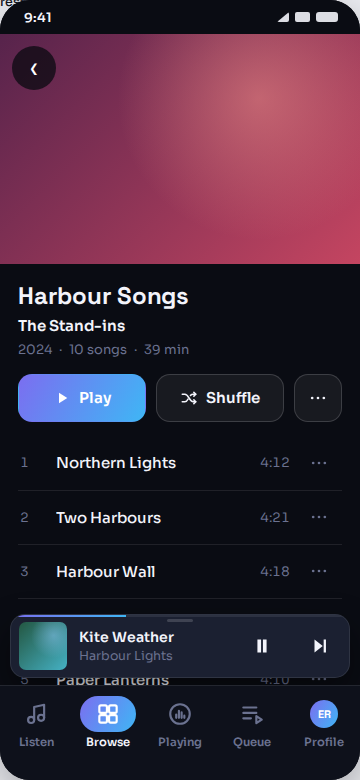
E — the play controls take two rows recommendation
The primary takes a row of its own, so its label has the whole 324 dp. Shuffle ▾ and the ⋯ share the row under it. R373 is kept entire — both split buttons, both ▾ menus, the remembered per-album, per-device pick and the relabel. The ⋯ stays in the action area, beside the buttons it belongs with and inside thumb reach.
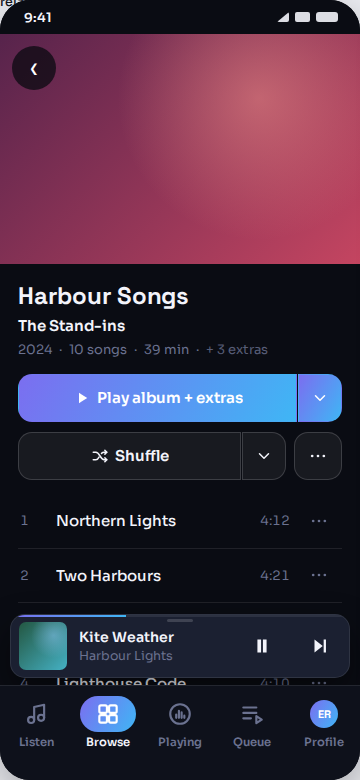
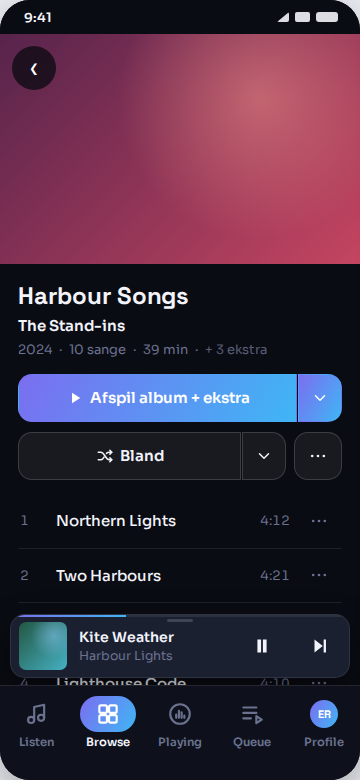
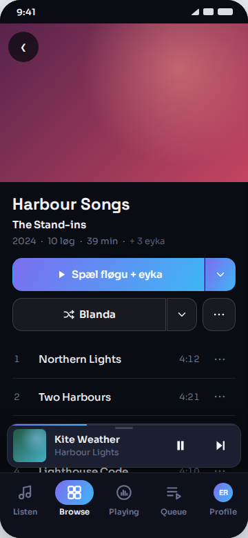
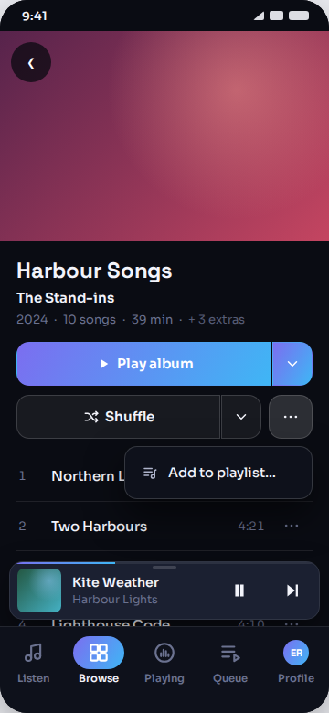
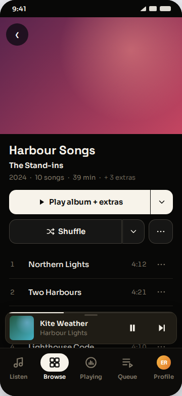
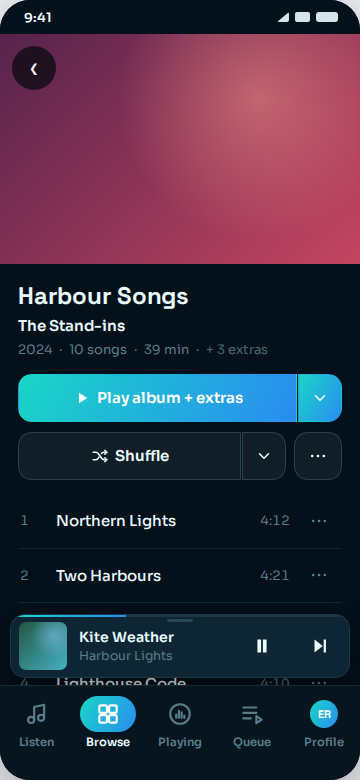
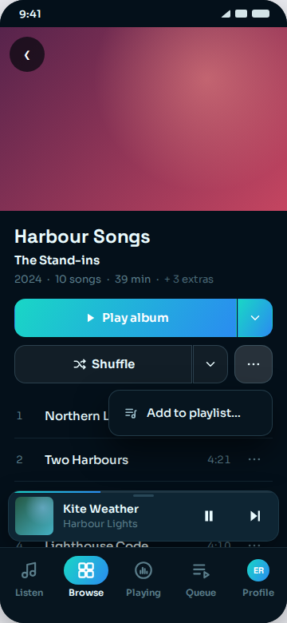
What E costs: 58 px of vertical space on an album that has editions — one fewer track visible above the mini player. Nothing else; no behaviour changes and no string changes.
How they compare
| A · merged | B · top bar | C · title block | D · compact | E · two rows | |
|---|---|---|---|---|---|
| Keeps R373 whole | no | yes | yes | yes | yes |
| Primary whole, en | yes | no | no | no | yes |
| Primary whole, da | flush to the corner | no | no | no | yes |
| Primary whole, fo | wraps to two lines | no | no | no | yes |
| Shuffle whole | yes | no | no | glyph only | yes |
| The relabel is visible | no relabel exists | truncated | truncated | identical pictures | yes |
| Plain album consistent | identical | loses its ⋯ too | ⋯ detached | Shuffle is two things | one row, as today |
| The ⋯ menu is clear of the controls | yes | yes, over the cover | covers them | yes | yes |
| Tap targets on the action row | 3 | 4 | 4 | 5 | 2 + 2 |
| Vertical cost | none | none | none | none | +58 px on editions albums |
| Implies a desktop change | yes — the ▾ menus go there too | yes — the ⋯ would move | yes — the ⋯ would move | no | no |
| New strings | 2 (Play extras, Shuffle extras) | none | none | none | none |
The desktop
The brief says to redraw it only if an option implies it should change. E does not. The desktop header has 1120 px and holds R373’s split pair, FR-6’s ⋯ and the relabelled primary on one row with room left over — so the phone’s second row is a phone answer and nothing follows from it. A, B and C would each move something on the desktop as well.
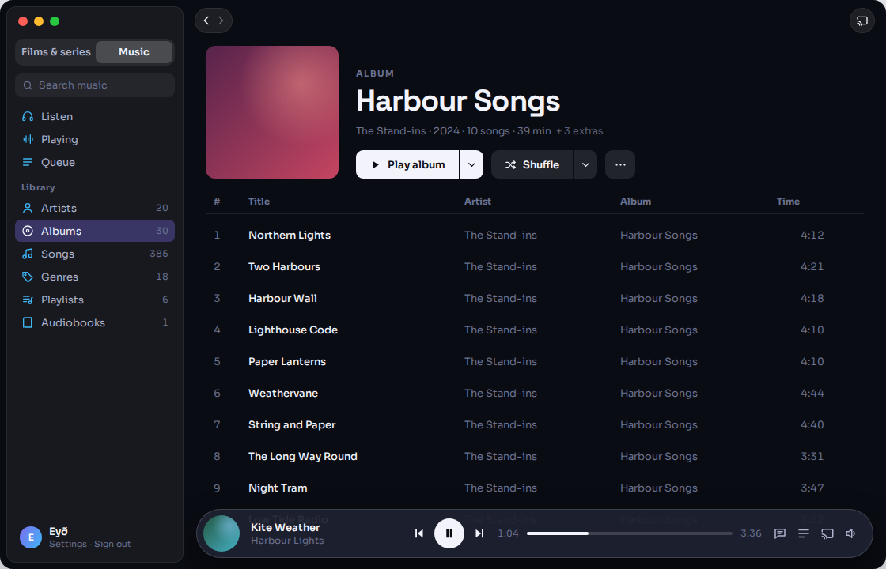
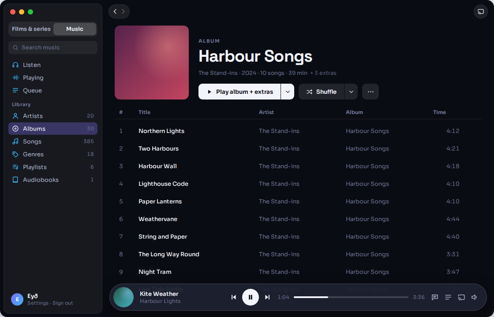
Decided in the drawing
- The ⋯ holds one row today and is drawn as a menu, not a button. FR-6 says more rows join it later, so no option gives it a shape that only works with one item.
- The header carries R373’s + {k} extras. It is in FR-R373-2 point 1, and without it an editions album is indistinguishable from a plain one in a still picture.
- In E, the second row’s Shuffle ▾ fills the row and the ⋯ sits flush right. Left at R373’s flex:.72 it stopped growing and left 76 px of the row empty past the ⋯ — which only the first render showed.
- The ▾ half is 44 px, not 40. That is the shipped number (ravilo-music.css:414); the playlists round drew 40, which quietly gave every Play label 4 px it does not have.
New strings
The recommendation needs none. Every word in E’s pictures is already in i18n/: ed.play_album, ed.play_extras, ed.n_extras, music.shuffle, and the playlists round’s music.add_playlist.
Option A alone would need two that do not exist, drafted here and not settled:
| key | en | da | fo |
|---|---|---|---|
| ed.play_extras_row | Play extras | Afspil ekstra | Spæl eyka |
| ed.shuffle_extras_row | Shuffle extras | Bland ekstra | Blanda eyka |
Still open, and not mine to settle.
- {k}, the extras count. Drawn as + 3 extras; the brief named no number and the playlists round drew none. The album stays 10 official songs · 39 min.
- The nine album track titles beside Northern Lights are still the music mockup’s corpus, carried over from the playlists round, which asked for the real stand-ins and has not had them.
- R373’s phone row truncating today is shipped behaviour, not something this round introduced. Whether that is its own task is Bárður’s call.
- The shipped action button has no horizontal padding at all, so a label that fills it runs flush into the 14 px corner radius — png/amp-zoom-glyph-da-4x.png at 4×. It is left as production draws it in every frame here; whether it is worth fixing is a separate question from this one.